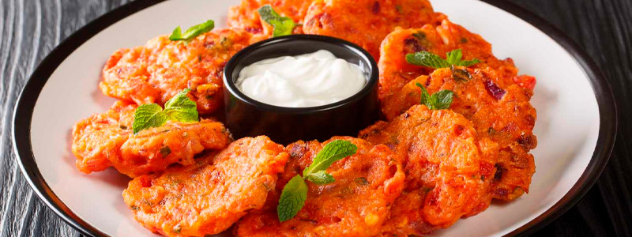

Dónde Comer
En este buscador, vas a poder filtrar por nombre, tipo de establecimiento y por barrio
Ver másDescubre paisajes frente al mar Egeo, la gastronomía local y la historia de una de las islas más bellas de Grecia.
Explorar actividades
En este buscador, vas a poder filtrar por nombre, tipo de establecimiento y por barrio
Ver más
En Santorini encontrarás una amplia variedad de platos típicos que reflejan la riqueza de la gastronomía y la cultura griega.
Ver más
Conocé las Tabernas en donde vas a poder disfrutar de la mejor gastronomía de la ciudad.
Ver másUn recorrido por los paisajes más icónicos de la isla.